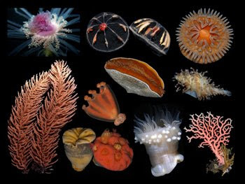
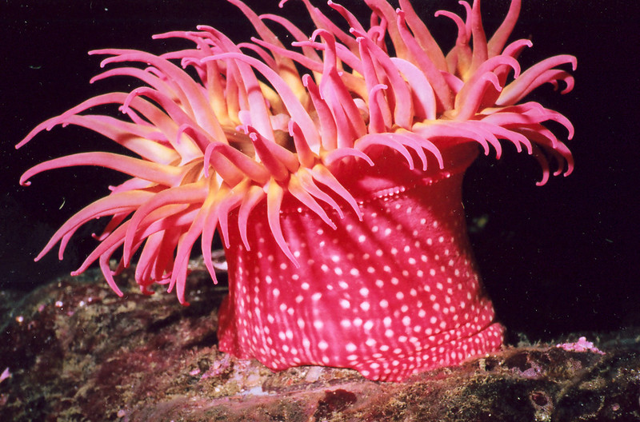
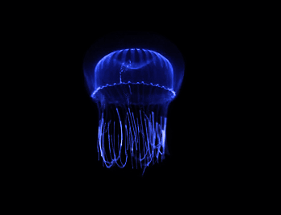
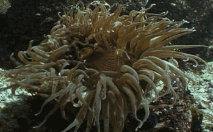
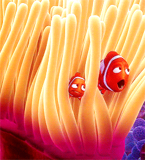

Cnidarios
Los Cnidarios, Cnidaria, son un filo de animales invertebrados relativamente simples que viven en hábitats acuáticos. Su nombre viene del griego knide, que significa ortiga, el término alude a la presencia de cnidocitos, unas células exclusivas de estos animales que utilizan normalmente para atrapar a sus presas y que son capaces de causar irritación en otros animales. Este grupo incluye unas 10000 especies conocidas popularmente como medusas y pólipos como el coral. En algunas ocasiones a este grupo de animales invertebrados se les designa celentéreos o celenterados, una antiguo filo en desuso en la actualidad por los zoólogos.

La mayoría de cnidarios viven en hábitats marinos, pero algunas especies se han adaptado a la vida en agua dulce. Las necesidades para vivir de cada especie son bastante dispares. Hay algunas que dependen de endosimbiosis con algas mientras que otras necesitan combinar épocas de vida sésil con vida móvil. Algunas pueden vivir cerca de la costa mientras otras flotan cerca de la superficie en medio del océano.


La forma más habitual de alimentarse los cnidarios es mediante depredación. Sin embargo, algunas especies disuelven materia orgánica encontrada en el agua o se alimentan gracias a simbiosis con algas. Las especies predadoras usan sus cnidocitos para envenenar y enredar a sus víctimas. Cuando detectan fluidos de la víctima en el agua, los detectores químicos provocan que los tentáculos del animal se doblen hacia adentro, introduciendo la presa en su boca. Una vez allí, las células glandulares secretan enzimas digestivos que reducen la presa a nutrientes que el animal puede absorber. La circulación de estos nutrientes es mediante corrientes de agua y para llegar a la capa externa lo hacen por difusión simple o mediante células de la mesoglea.
La respiración se produce en las células tanto de la capa externa como interna ya que ambas son capaces de captar oxígeno del agua y expulsar dióxido de carbono. En algunas especies comprendidas en el filo que agrupa a estos invertebrados, la simbiosis con algas es la fuente de su oxígeno.
La reproducción de los cnidarios puede ser tanto sexual como asexual. La reproducción asexual puede ser mediante regeneración de fragmentos perdidos o mediante gemación. La reproducción sexual varía mucho entre especies, con algunas de ellas que tienen un ciclo bastante complejo que combina generaciones sexuales y asexuales entre medusa y pólipo. Su desarrollo, eso sí, es siempre indirecto pasando por el estadio de larvas móviles.
Los cnidarios se clasifican en cuatro clases: Hidrozoos, Escifozoos, Cubozoos y Antozoos.
Aunque la mayoría de hidrozoos son marinos, incluye varias especies de agua dulce como la hydra. No presentan nematocistos y su mesoglea no tiene células. Sus especies tienen fase de medusa con velo y pólipo
Los escifozoos se caracterizan en que la fase de pólipo es bastante pequeña y la medusa carece de velo. Tienen cnidocitos en la capa gastroepitelial. Son las medusas más habituales en las costas.
En el grupo de los Cubozoos se incluye solo medusas capaces de nadar muy rápidamente y con unos cnidocitos especialmente potentes. Su cuerpo tiene forma de cubo y es la clase que incluye menos especies.
En el grupo de los Antozoos se integran las especies que sólo tienen fase de pólipo, incluyendo a anémonas y corales.
